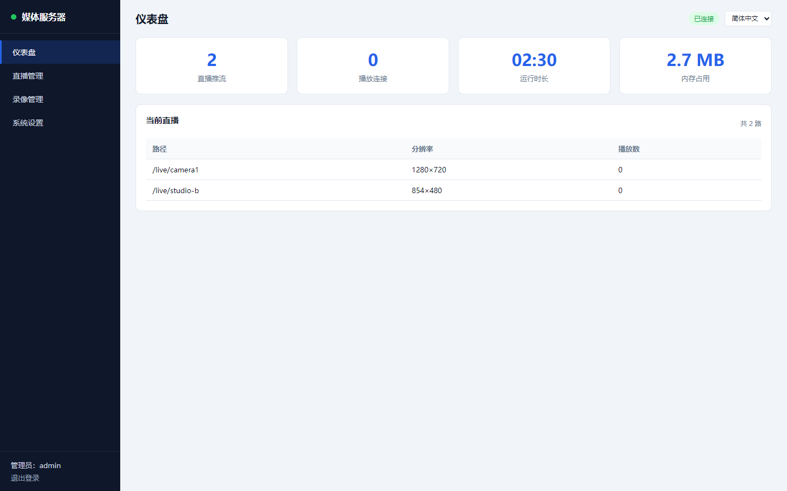

PHP 实现
基于 Workerman 事件循环，RTMP 握手、FLV 标签解析与 fMP4 封装均在 PHP 中实现，不依赖 FFmpeg 转码进程或 C++ 扩展。
PHP 8.2+ · Workerman · MIT
RTMP / HTTP-FLV 推流接入，RTMP / HTTP-FLV / WS-FLV 播放，fMP4 录像与按毫秒回放，外加一个中英双语管理后台。不依赖 FFmpeg 转码进程或 Node 运行时。
$ composer install
$ php start.php start
rtmp server tcp://0.0.0.0:1935 start
http server 127.0.0.1:18080 start
$ ffmpeg -re -i demo.mp4 -c:v libx264 \
-c:a aac -f flv rtmp://127.0.0.1/live/stream
▸ 推流已接入，打开 /admin/ 看后台协议链路
同一路流可被多种客户端同时拉取，也可在推流时同步录像，事后按时间段回看。
rtmp://host:1935/app/stream
POST /app/stream
RTMP 推流，或直接 POST FLV 数据
FLV 解析 · GOP 缓存 · 分发 · 封装
RTMP
HTTP-FLV
WS-FLV
fMP4 分段
SQLite 索引
GET /playback/live/stream?start=1788165249473&end=1788165554005
服务端跨分段切片重封装，直接喂给 <video>
功能范围
覆盖推流接入、播放分发、fMP4 录像、按时间回放、管理后台与自动化测试。
基于 Workerman 事件循环，RTMP 握手、FLV 标签解析与 fMP4 封装均在 PHP 中实现，不依赖 FFmpeg 转码进程或 C++ 扩展。
同一路流可同时以 RTMP、HTTP-FLV、WS-FLV 分发，并支持 disableAudio / disableVideo / disableGop 查询参数过滤。
同时兼容 Enhanced RTMP（codecId=0 + hvc1）与旧版 codecId=12 两种 HEVC 封装，音频走 AAC。
按关键帧边界切片与分段，每个 .mp4 自带完整 moov，可单独播放、可被 ffprobe 与浏览器直接解析。
/playback 接口跨分段切片重封装，从 start 前最近的关键帧起播；mdat 分块流式发送，内存占用与回放时长无关。
包含仪表盘、直播预览、录像列表与时间回放、系统设置；token 鉴权，支持中英文切换。
数据驱动用例覆盖 推流 → 录像 → 回放 → 解码校验；CI 对 PHP 8.2 / 8.3 / 8.4 执行语法检查与冒烟测试。
五个压测场景的脚本、原始数据与分析随仓库发布，可在其他机器上复现。
管理后台
原生 JS 单页应用，无构建步骤，由服务进程直接提供。

性能基准
测试环境：AMD Ryzen 9 9900X · Windows · PHP 8.4 · 1080p30 @ 4096 kb/s · ffmpeg -c copy 推流
event 事件循环下单进程上限，100% 连接保持
内存 1.4 GB，每路约 1.17 MB GOP 缓存
满负荷但未劣化的临界点，CPU 98.5%、零掉帧
拉流侧内存占用，1000 路合计约 36 MB
| 推流 | 拉流 | CPU | 内存 | 保持率 | 掉帧 |
|---|---|---|---|---|---|
| 50 | 500 | 57.4% | 95 MB | 100% | 0 |
| 100 | 500 | 60.5% | 158 MB | 100% | 0 |
| 200 | 500 | 68.9% | 288 MB | 100% | 0 |
| 500 | 500 | 98.5% | 661 MB | 100% | 0 |
Windows 上务必安装 event 扩展。 默认 select 事件循环在约 253 连接后不是拒绝连接，而是整个进程停摆——连 HTTP API 都不响应。
快速开始
需要 PHP 8.2+ 与 Composer；ffmpeg 仅在推流和 E2E 测试时需要。
composer installphp start.php startRTMP 监听 1935，HTTP / WebSocket 监听 18080。
ffmpeg -re -i file.mp4 -c:v libx264 -c:a aac -f flv \
rtmp://127.0.0.1/live/streamhttp://127.0.0.1:18080/live/stream.flvws://127.0.0.1:18080/live/stream.flvrtmp://127.0.0.1/live/streamhttp://127.0.0.1:18080/admin/